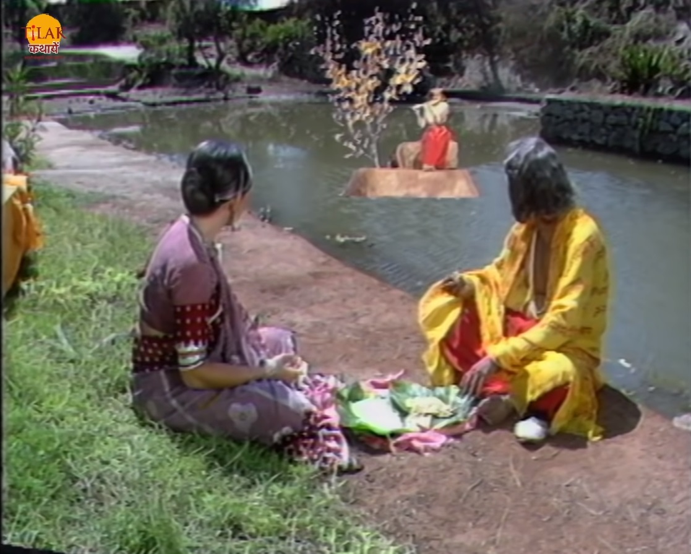
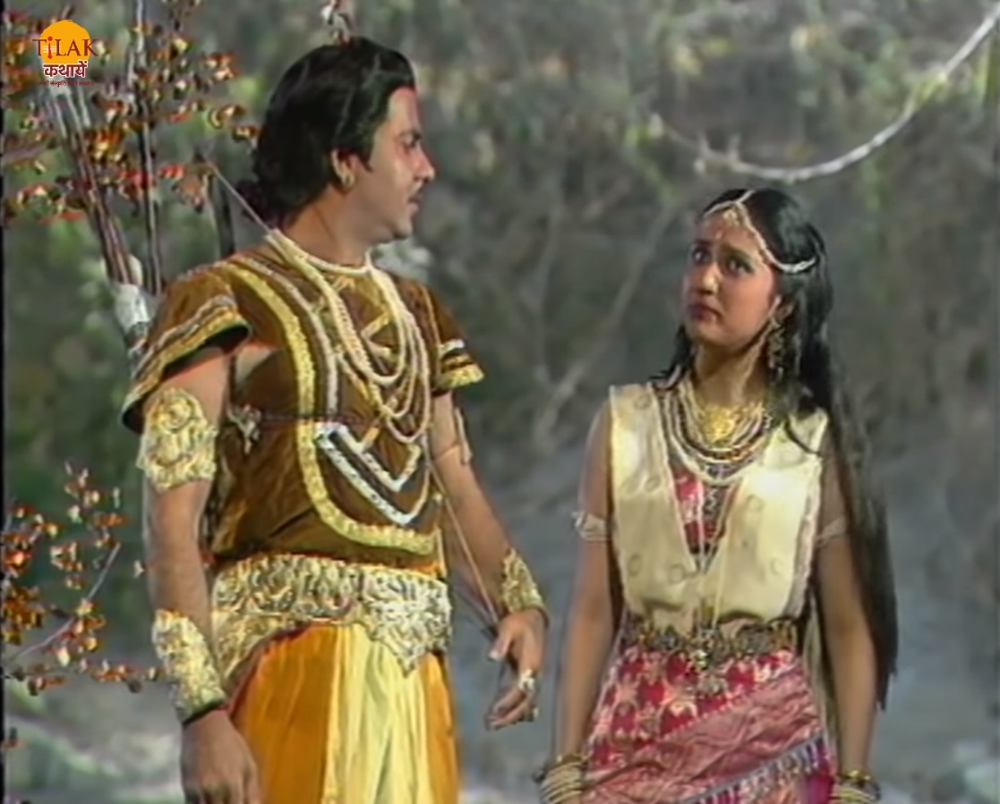

राजा विक्रम बेताल को पकड़ने के लिए निकलता है क्योंकि उसने साधु को वचन दिया था। बेताल को विक्रम जब भी पकड़ता वो उसे एक कहानी सुनता और राजा विक्रम से उस कहानी पर प्रश्न पूछता। जैसे राजा विक्रम उत्तर देता बेताल अपनी शर्त के मुताबिक़ फिर स उड़ जाता। राजा विक्रम फिर से उसे पकड़ने जाता है और बेताल उसे इस बार एक और कहानी सुनता है जो की पुण्यपूर नगर के राजा की कहानी थी जिसका नाम था वल्लभ। राजा बहुत शक्तिशाली और वीर था, लेकिन उसमें एक कमी धो वो राजकोष का धन बात बात पर लूटा देता था इस बात से राजा का मंत्री राजा को रोकता था की ऐसे व्यर्थ के राजकोष को बहाना इस से राजकोष ख़ाली हो जाएगा। लेकिन राजा मंत्री की बात को नकार देता था। राजा अपना नया महल बनाने की बात करता है तो मंत्री उन्हें समझाता है। लेकिन राजा उसकी फिर भी नहीं सुनता। मंत्री इस बात से परेशान था तो वह अपनी पत्नी से कहता है की यादि मेरे मंत्री होते हुए राजकोष पर संकट आया तो यह उसकी गलती होगी। वह राजपद छोड़ने की बात करता है तो उसकी पत्नी उसे कहती है की आप कुछ दिन का रजमहल से अवकाश ले कर तीर्थ यात्रा पर क्यों नहीं चलते हैं।
|  | मंत्री उसकी बात मान लेता है और दोनों यात्रा पर निकल पड़ते हैं। रस्ते में दोनों भोजन करने के लिए रुकते हैं तो वो एक तालाब के पास बैठ कर भोजन करते हैं टालब से एक छोटा सा द्वीप निकलता है और एक रहस्यमयी कन्या उस द्वीप पर बैठ कर बाँसूरी बजा रही थी। यह देख कर मंत्री राजा को यह बात सूचित करने के लिए जाता है। राजा यह बात सुनकर उस कन्या को देखने के लिए अकेले चला जाता है। राजा उस कन्या तक पहुँच जाता है। राजा कन्या से उसके बारे में पूछता है तो वह बताती है की वो गंधर्व कन्या है और उसके पिता गंधर्व राजा है। उसके पिता उसकी शादी जिस से करना चाहते थे वह मुझे पसंद नहीं था इसलिए मेरे पिता ने मुझे इस जादुई द्वीप पर भेज एक राक्षस को भेंट करने के लिए भेज दिया। वह राक्षस हम पर आक्रमण करता था मेरे पिता ने उस से समझोत कर दिया की वो हर अमावस्या की रात को उन्हें बहुमूल्य भेंट देंगे और आज रात अमावस्य की रात है इसलिए आप यहाँ से चले जाइए वरना वो राक्षस आपको मार देगा। राजा गंधर्व कन्या को सुरक्षा प्रदान करता है और उसे उस राक्षस से बचाने का वादा करता है। गंधर्व कन्या राजा को कहती है की यदि वह उसे उस राक्षस से बचा लेगा तो वह शेष जीवन उसके साथ रहेगी। |  |
राक्षस वहाँ आ जाता है दोनों में लड़ाई शुरू हो जाती है राजा को राक्षस राजा को मारने के लिए पत्थर उठता है तो तभी मंत्री अपने सैनिकों के साथ आकर उस राक्षस को तीरों से मार देता है। राजा मंत्री की सूझ बुझ से खुश हो जाता है
राजा गंधर्व कन्या के साथ अपने विवाह के बारे में सभी को सूचित करने और आमंत्रित करने के लिए कहता है और सभी कलाकारों को मंत्रित करने के आदेश देता है और राजकोष सेधन पुरस्कार के रूप में देने को कहता है राजा को फिर से फ़िज़ूल में धन व्यर्थ करने की बात करता है तो मंत्री को दिल का दौरा पड़ जाता है और उसकी मृत्यु हो जाती है। अब बेताल कहानी को रोक कर विक्रम से पूछता है की मंत्री को राजा के समाचार से ख़ुशी होनी चाहिए लेकिन वह इतना दूख़ी क्यों हो गया की उसकी मृत्यु हो गयी। राजा विक्रम बेताल को बताता है की मंत्री इस चिंता में दूख़ी हो गया की राजकोष में इतना धन नहीं है जितना राजा विवाह पर लगाना चाहता था और राजा की आज्ञा नहीं मानता तो राजा का अपमान हो जाता और यादि उनकी इच्छा पूरी नहीं होती तो राजा का सम्मान घाटता इसलिए दुःख में उसके प्राण चले गए। मंत्री की मृत्यु के बाद राजा वल्लभ सब समझ जाता है और उसे अपने किए पर शर्मिंदगी होती है। राजा विक्रम का उत्तर सुन बेताल फिर से उड़ जाता है और अपने पेड़ पर जाकर लटक जाता है।
| Previous Story | Home | Next Story |